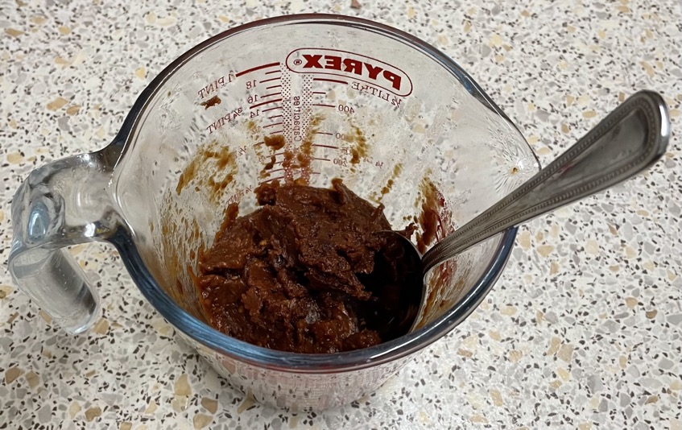

Chilli con carne
Sun-dried tomatoes
- Soak for 10 mins in warm water
- Blitz in chopper
Onions
- Fry till soft
- 2 medium (270g) onions
- olive oil
- Add and cook for 1 min
- 4 cloves garlic minced
- 1 chopped red chilli
- 1½ tsp cumin
Chilli con carne
- Fry till brown
- 500g minced beef
- olive oil
- Add
- 2 tins of tomatoes
- 150ml of salted stock (½ cube)
- onions
- sun-dried tomatoes
- 1 cinnamon stick
- 1 tsp oregano
- ¼ tsp chilli flakes (optional)
- Bring to boil
- Transfer to slow cooker and cook for 3 hours
- Add and cook for 1 hour
- 1 tin red kidney beans rinsed
- 1 tin black/pinto beans rinsed
- ½ tsp fish sauce
- Add
Serving
Notes
- Try 3 tins beans kidney/black/pinto
- Can mix in hot salsa at end
Pics
